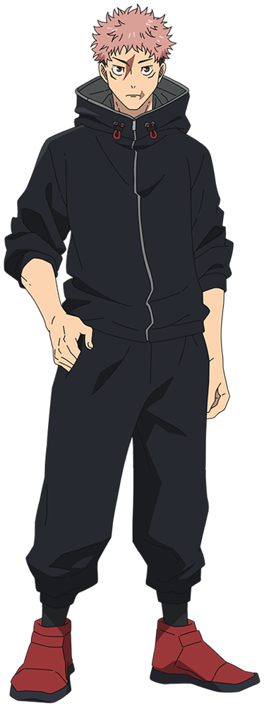
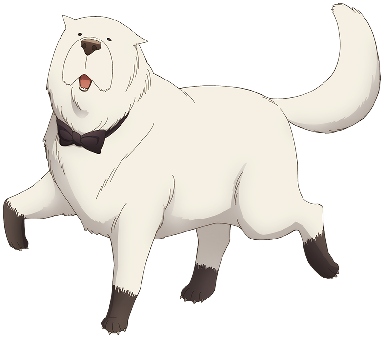
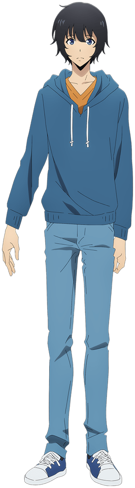

Mihon Desktop App
ミホンfor Windows 10 & 11
Read your manga on your computer, with the real Mihon app.
Free. Made by a fan, not by the Mihon team.
第1話Chapter 1
The real Mihon, on a bigger screen
It's the same Mihon you know from your phone: your library, your extensions, your reading history. It just opens in a window on your PC.
It isn't a copy or a remake. Inside, it runs the official Mihon app.漫画を、もっと大きな画面で。

第2話Chapter 2
Ready in three steps
- 1DownloadOne small file, Mihon.exe.
- 2Open itClick “Accept and install”. The first time takes a few minutes.
- 3ReadMihon opens in its own window. Next time, in about 5 seconds.
Windows may warn you the first time, because the app is new and isn't signed yet. Click More info, then Run anyway.
第3話Chapter 3
Bring your library with you
Reading on your phone already? Make a backup in Mihon there, drag the file onto the window on your PC, and restore it.
It works the other way round too.


Notice
Mihon has been updated to the newest version.
第4話Chapter 4
Always the newest Mihon
Every time you open it, the app checks for a new version of Mihon and installs it for you. There's nothing to do.
第5話Final chapter
Your turn
Free, for Windows 10 and 11.
Your PC needs 64-bit Windows, 8 GB of memory and about 10 GB of free space.
All versions
Questions
- Is this the official Mihon app?
- No, it's fan-made. But inside, it runs the official Mihon app, unchanged.
- Is it free?
- Yes, completely. It's open source too.
- Do I need BlueStacks or another emulator?
- No. Everything it needs comes with it.
- Can I use it on a Mac?
- No, only on Windows 10 and 11.
- Something isn't working
- Tell us on GitHub.